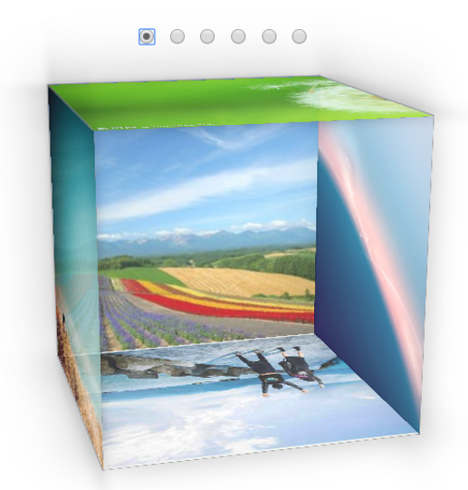

前几天看了一个小视频，了解到了3D正方体照片的打印效果。看的时候注意作者是使用HTML标签进行实现的。就想尝试自己写一下。这种3D照片效果，在我们生活中还是比较常见的。但在网页网站的设计中还是比较少见。我们常见的图片显示效果一般还是以轮播图为主。所以常用3D正方体效果来显示图片的话就会较新颖，独特，更具吸引力。
正方体的效果，很明显我们需要翻折，旋转等标签属性。在之前的打印六边形的效果的博客中，我们已经介绍了有关翻转标签。这里就再简单的介绍一下:
transform功能来实现文字或图像的旋转、缩放、倾斜、移动这四种类型的变形处理。transform: rotate(-60deg) skew(30deg)。其中Deg是表示倾斜角度的单位。Rotate表示旋转，skew倾斜。
在实现3D正方体照片效果的过程中，首先我们可以先将照片以及其他需要元素用HTML进行简单的罗列。这里我们可以增加类似轮播图效果的翻页。这样我们在观看图片的时候，就可以根据自身需要进行选择。
代码如下：
</div>
<input type="radio" checked id="radio-front" name="select-face"/>
<input type="radio" id="radio-left" name="select-face"/>
<input type="radio" id="radio-right" name="select-face"/>
<input type="radio" id="radio-top" name="select-face"/>
<input type="radio" id="radio-bottom" name="select-face"/>
<input type="radio" id="radio-back" name="select-face"/>
<div class="separator"></div>
<div class="space3d">
<div class="_3dbox">
<div class="qian"></div>
<div class="_3dface _3dface--top"></div>
<div class="_3dface _3dface--bottom"></div>
<div class="_3dface _3dface--left"></div>
<div class="_3dface _3dface--right"></div>
<div class="_3dface _3dface--back"></div>
</div>
</div>
对上面的代码运行后，我们得到的就是一些简单的元素。相关元素的样式，我们可能还需要进行进一步的设置。进一步的样式设置，我们首先可以将图片添加上去。样式设计的话，主要就是通过盒子模型，边框，还有就是翻转，倾斜，折叠
样式设置：
body {
color: #333;
padding: 20px;
text-align: center;
font-family: Arial;
}
.separator {
margin-top: 40px;
}
.twitter {
color: #FFF;
text-decoration: none;
border-radius: 4px;
background: #00ACED;
display: inline-block;
padding: 10px 8px;
margin-bottom: 15px;
font-weight: bold;
}
.space3d {
perspective: 1000px;
width: 250px;
height: 250px;
text-align: center;
display: inline-block;
}
._3dbox {
display: inline-block;
transition: all 0.85s;
text-align: center;
position: relative;
width: 100%;
height: 100%;
transform-style: preserve-3d;
transform: rotateX(-15deg) rotateY(15deg);
}
._3dface {
overflow: hidden;
position: absolute;
border: 1px solid #888;
background: #FFF;
box-shadow: inset 0 0 60px rgba(0, 0, 0, 0.1), 0 0 50px rgba(0, 0, 0, 0.3);
color: #333;
line-height: 250px;
opacity: 0.8;
}
._3dface--front {
width: 250px;
height: 250px;
transform: translate3d(0, 0, 125px);
}
._3dface--top {
width: 250px;
height: 250px;
transform: rotateX(90deg) translate3d(0, 0, 125px);
}
._3dface--bottom {
width: 250px;
height: 250px;
transform: rotateX(-90deg) translate3d(0, 0, 125px);
}
._3dface--left {
width: 250px;
height: 250px;
left: 50%;
margin-left: -125px;
transform: rotateY(-90deg) translate3d(0, 0, 125px);
}
._3dface--right {
width: 250px;
height: 250px;
left: 50%;
margin-left: -125px;
transform: rotateY(90deg) translate3d(0, 0, 125px);
}
._3dface--back {
width: 250px;
height: 250px;
transform: rotateY(180deg) translate3d(0, 0, 125px);
}
#radio-left:checked ~ .space3d ._3dbox {
transform: rotateY(90deg);
}
#radio-right:checked ~ .space3d ._3dbox {
transform: rotateY(-90deg);
}
#radio-bottom:checked ~ .space3d ._3dbox {
transform: rotateX(90deg);
}
#radio-top:checked ~ .space3d ._3dbox {
transform: rotateX(-90deg);
}
#radio-back:checked ~ .space3d ._3dbox {
transform: rotateY(180deg);
}
._3dface--front {
background: url(img/背景图片/1111111.png);
background-size: 100%;
}
._3dface--left {
background: url(img/背景图片/90c2a7d1d995d6c37114d0bf61e1533a.jpg);
background-size: auto 100%;
}
._3dface--right {
background: url(img/背景图片/b9a5cbdce3c2b1a72470685a2106f98e.jpg);
background-size: auto 100%;
}
._3dface--top {
background: url(img/背景图片/download.jpg);
background-size: auto 100%;
}
._3dface--bottom {
background: url(img/背景图片/u=25449582,2238308793&fm=15&gp=0.jpg);
background-size: auto 100%;
}
._3dface--back {
background: url(img/背景图片/u=2984323656,369738739&fm=26&gp=0.jpg);
background-size: auto 100%;
}
显示效果：

在我看来，学习的途径是比较多，劳逸结合也是非常重要的。在我们平时刷视频，看资讯的时候，如果看到一些感兴趣的有关学习的东西，我们还是可以尝试一下。